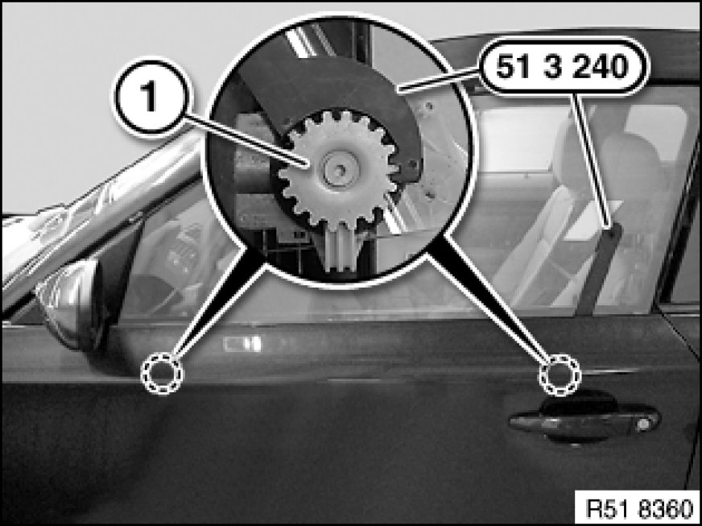
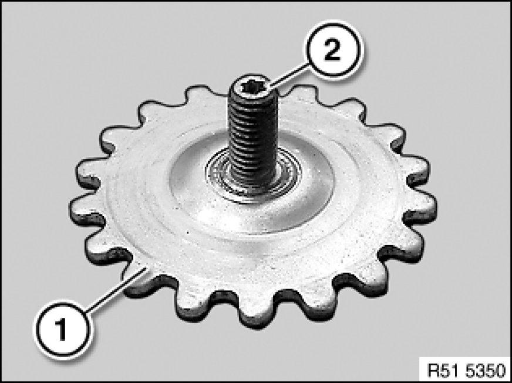
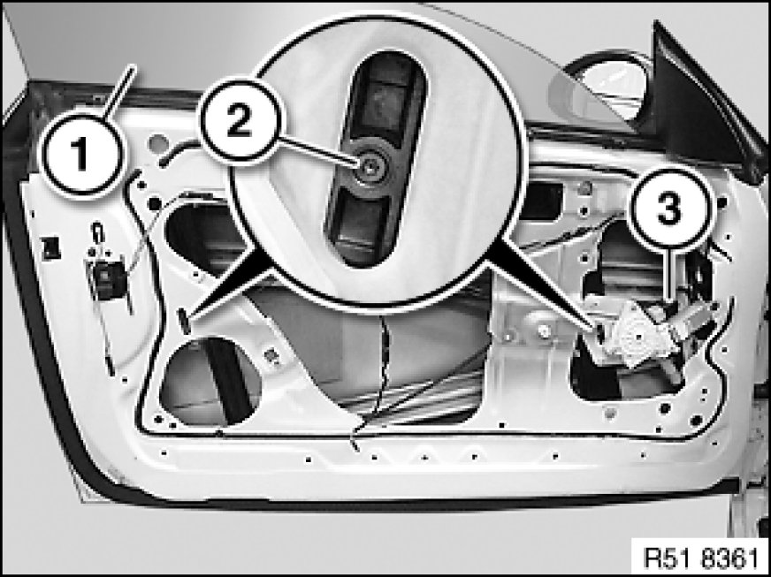
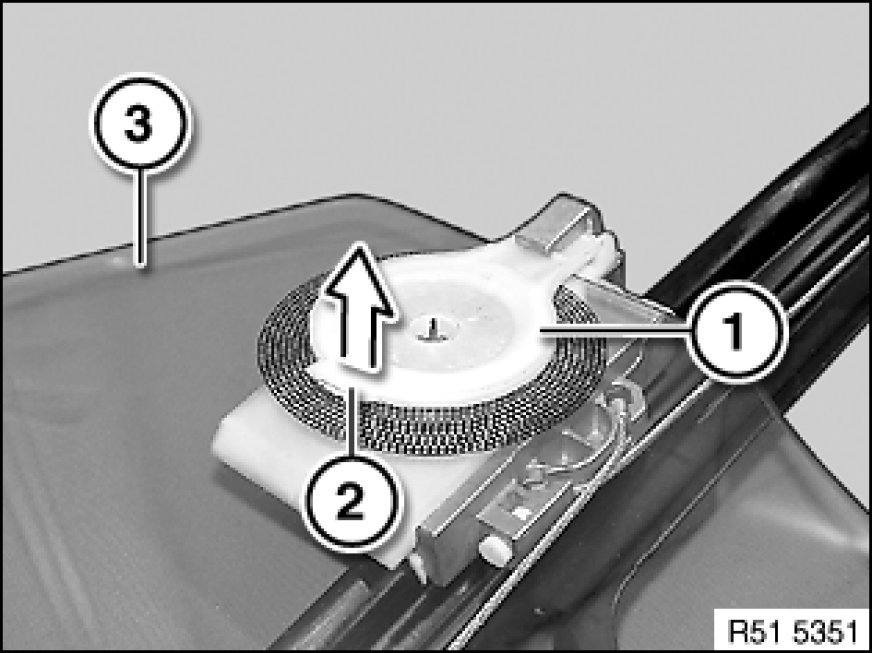
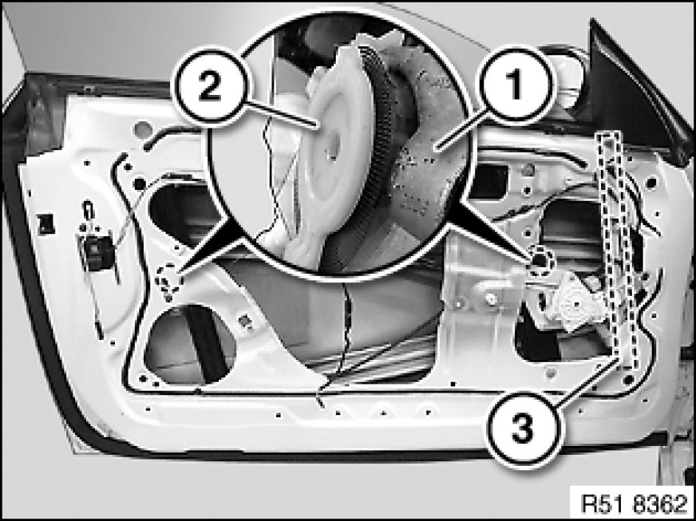

Front Door Window Glass: Service and Repair
51 32 170 - Removing and installing/replacing door window glass, front left or right

Special tools required:

Warning!
Risk of injury!
Carry out work on the power window unit only when the power window motor is de-energized.

Necessary preliminary tasks:
- Remove sound insulation in front door [1][2]51 48 060 Removing and Installing/Replacing Sound Insulation In Left or Right Front Door
- Remove outer window cavity cover strip 51 21 300 Removing and Installing/Replacing Window Cavity Cover Strip on Outside of Left or Right Front Door

Slacken hook screws (1) with special tool 51 3 240 on ring gear.
Tightening torque 51 32 1AZ 51 32 Front Door Windows.

Note:
Slacken hook screw on ring gear (1) until it can be easily twisted out at the inner star (2).

Open door window glass (1) until hook screws (2) are accessible.
Important!
Risk of injury!
Disconnect plug connection (3) at power window motor (risk of trapping).
Release hook screws (2) (turn in clockwise direction).

Note:
Door window glass (3) remove for purposes of clarity.
Raise holder (1) at lug (2) and remove door window glass (3) in upward direction.

Installation Note:
Make sure door window glass (1) is correctly seated on holder (2) and window guide (3).
Adjust door window glass Adjustments.
Carry out function check on power window unit and anti-trapping protection.
If necessary, normalize 67 62 ... Notes on Initializing Power Window Unit In Front Door power window unit.